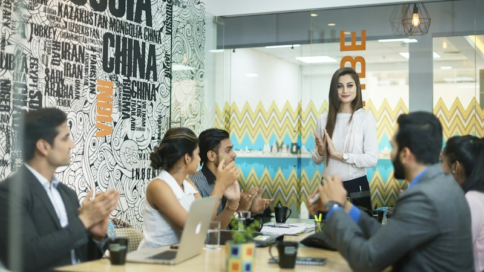

Governance
Leadership & Board of Directors
Our governance framework ensures strict accountability, conflict sensitivity, and programmatic excellence.
Brokering durable peace accords, mediating resource disputes, and unlocking sustainable livelihoods across Nairobi informal settlements and Kenya's volatile conflict corridors.
A peaceful, reconciled, and self-reliant Kenya where communities resolve disputes through dialogue, protect shared resources, and prosper together with lasting economic dignity.
To spearhead grassroots conflict resolution, traditional Alternative Dispute Resolution (ADR), and mediation accords—using peace as the essential foundation to anchor climate resilience, shared water access, youth empowerment, and women-led prosperity.
The Center for Livelihood & Development (CLD Kenya) was conceived in 2014 by a passionate team of Kenyan mediators, agronomists, and community development organizers in Nairobi. Recognizing that recurrent resource-based conflict—over pasture, water, and informal urban boundaries—paralyzes economic progress, CLD pioneered an integrated "Peace for Livelihoods" model.
From our Nairobi secretariat in Upper Hill, we coordinate interventions that link informal settlement peace champions in Mathare and Kibera with traditional peace elders across pastoralist corridors in Turkana, Samburu, and Marsabit.
"Where there is conflict, no seed can flourish. By mediating resource disputes and equipping communities with shared water and economic opportunities, we build peace that endures."
— Executive Director, CLD Kenya
How CLD transforms volatile flashpoints into prosperous, self-sustaining community ecosystems through a 4-phase peace progression.
Deploying 24/7 community monitors to detect trigger events—dry season pasture migrations, border water tensions, or urban youth gang flare-ups.
Convening customary Councils of Elders, religious leaders, and women mediators under the acacia tree to de-escalate tensions and reach consensus.
Formalizing communal pacts witnessed by County Commissioners and peace committees with mutual grazing schedules, weapon drop-offs, and truce terms.
Solidifying peace by investing in neutral solar boreholes, cross-clan women market chamas, cooperative fodder banks, and youth digital micro-enterprises.
Our governance framework ensures strict accountability, conflict sensitivity, and programmatic excellence.
Center for Livelihood & Development operates under strict compliance with Kenyan legislation and international humanitarian standards:
We actively collaborate with bilateral development agencies, international foundations, county governments, and corporate CSR programs.
Explore Institutional Partnerships